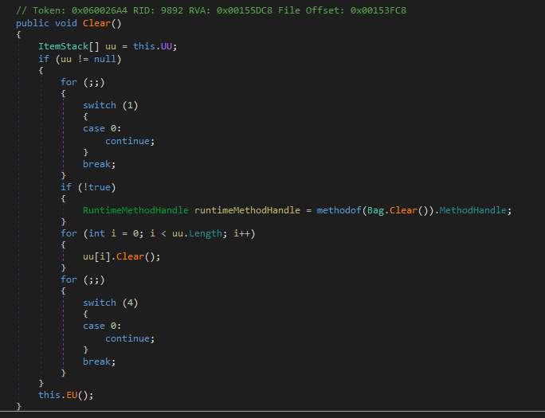
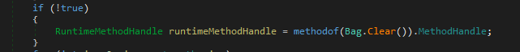
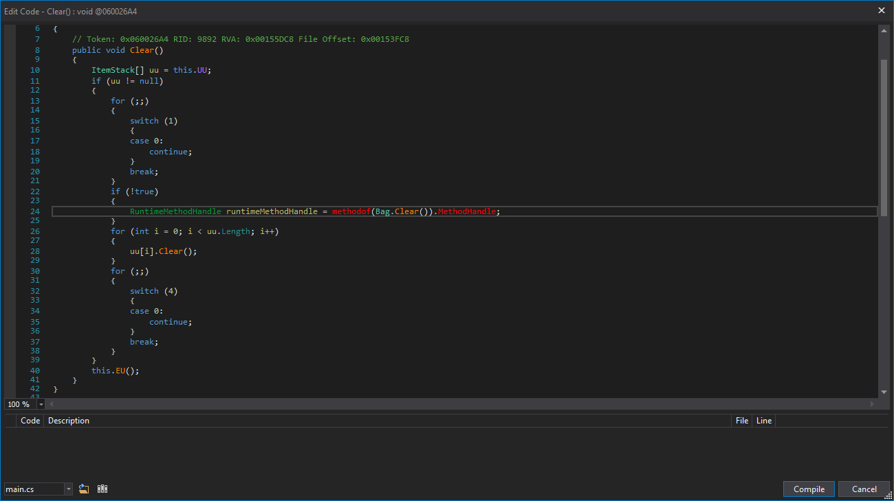
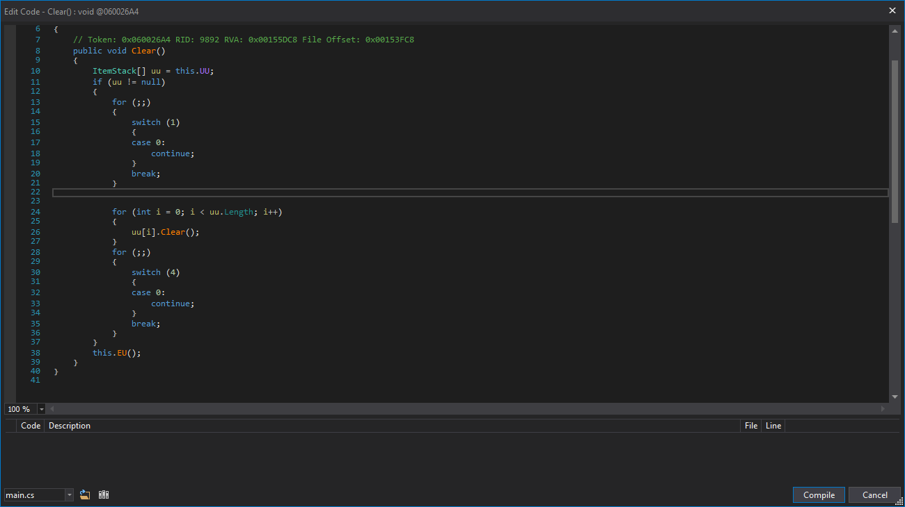
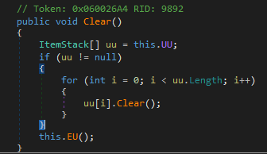

One of the biggest challenges of using dnSpy, and any of the above tools, is the de-obfuscation. That's the term used for decompiling a DLL, or in our case, the Assembly-CSharp.dll. Sometimes we see the code as it was originally written, but other times it looks and behaves completely differently.
Here's an example of the Bag class, in the Clear Method.

It's a Clear method in the Bag Class.Looks a bit messy, and non-sensical.

if (! true )? So if True is not true? It's confusing, and you can actually remove it. It's an artifact of the de-compiling phase.
Let's right click on the body of the method, and go to "Edit Method (C#)"

Notice the red against methodof? It's because it's not actually valid C #. And it's inside of that !true statement. Let's remove it.

And press Compile. If there's any errors, fix those up, until you can compile.
After your compile, the code will look similar to this:

Looks better? And probably a lot closer to the original code.
Created with the Personal Edition of HelpNDoc: Create iPhone web-based documentation